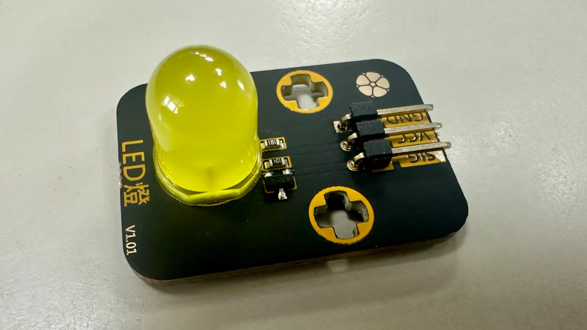

1認識 LED 模組
模組上除了 LED 本體，還已經內建了一顆電阻——這顆電阻的工作是「擋住」一部分電流，不然 LED 會因為電流太大而燒壞。因為是模組化的設計，你不用自己另外接電阻，這也是這學期不用麵包板的原因之一。
G接地
V電源
S訊號
板子上就是照這個順序印的：G 在上、V 在中、S 在下

接法跟上一課練習的一樣：VCC 對 V、GND 對 G、SIG 對 S。SIG（訊號）這條線，等一下程式碼裡會用「接在哪個腳位」來稱呼它——例如接在標號 7 的那一組，程式裡就會寫「腳位 7」。
2動手接線
✋ 動手做
做完一步，就點一下下面的格子打勾 👇
0 / 3
- 拔掉 USB，確定板子沒通電
- 把 LED 模組接到擴展板任一個標了數字的插槽（V 對 V、G 對 G、S 對 S），記住你接的是幾號
- 接好之後才插回 USB
3打開 Blink，這次要改
跟第 1 課一樣，打開「檔案」→「範例」→「01.Basics」→「Blink」。這次不是只看，要動兩種東西——腳位的代號，還有決定閃多快的數字：
把 LED_BUILTIN 換成你的號碼
範例裡沒有數字，寫的是
LED_BUILTIN——這是「板子內建那顆燈」的代號（在 UNO 上就是 13 號腳）。把它三個地方全部換成你接 LED 的插槽號碼，程式就會改去控制你接的那一顆。
認識 delay()
程式碼裡有
delay(1000) 這樣的字，1000 代表「等待 1000 毫秒」，也就是 1 秒。這個數字決定燈亮、燈暗各維持多久。
💡 為什麼是 LED_BUILTIN 而不是數字
LED_BUILTIN 是一個代號，意思是「這塊板子內建那顆燈接在哪一腳」。不同型號的板子，內建燈的腳位不一樣，寫代號就不用管是哪一塊板子。你把它換成 7，等於跟板子說「改成看 7 號腳」。
如果你打開的範例裡直接寫著數字 13（有些版本是這樣），那就把 13 換掉，意思完全一樣。
偷看一下：這段程式在寫什麼？好奇再點
void setup() { pinMode(LED_BUILTIN, OUTPUT); // 這支腳要拿來「輸出」電 } void loop() { digitalWrite(LED_BUILTIN, HIGH); // 讓這支腳「有電」，LED 亮 delay(1000); // 等 1000 毫秒（1 秒） digitalWrite(LED_BUILTIN, LOW); // 讓這支腳「沒電」，LED 暗 delay(1000); // 再等 1 秒 }
三個 LED_BUILTIN 都要換——上面那個 pinMode 是「先講好這支腳要用來輸出」，漏改它，下面兩行就對不上了。
HIGH 是「有電」，LOW 是「沒電」——LED 就是靠這樣一下有電一下沒電，才會一閃一閃。loop 大括號裡的東西會不斷重複執行。
📄 如果你 IDE 裡的範例跟上面寫的不一樣，可以打開這份對照：Blink.ino（原版範例）。
如果把兩個 delay(1000) 都改成 delay(200)，LED 閃爍的樣子會怎麼變？
數字變小，代表「等待」的時間變怎樣？
4換你動手改
✋ 動手做
做完一步，就點一下下面的格子打勾 👇
0 / 4
- 把程式碼裡三個
LED_BUILTIN都改成你接 LED 的插槽號碼（pinMode裡那個最容易漏掉） - 選對板子和埠，按上傳
- 看到 LED 開始閃，確認閃爍的是你接的那顆，不是板子上內建那顆
- 試著把兩個 delay 的數字都改成同一個更小的數字，再上傳一次，感受速度變化
LED_BUILTIN 都被換成了 7，兩個 delay 也從 1000 改成 200。右邊小畫面就是你等一下要接的那顆 LED 模組——改完上傳，它閃的速度就跟著變了。5卡住了？先看這裡
⚠️ 今天最常見的三個狀況
- 板子內建的燈在閃，外接的 LED 沒反應 —— 表示程式還在控制內建那顆燈，有
LED_BUILTIN沒換到。用「編輯 → 尋找」搜LED_BUILTIN，確認一個都不剩。 - LED 完全不亮 —— 先檢查接線的 V／G／S 有沒有插對插槽，再檢查腳位號碼跟你接的插槽是不是同一個數字。
- 上傳按下去，黑色輸出區跳紅字 —— 通常是改程式碼的時候不小心刪到不該刪的符號（例如分號
;），對照原本的範例檢查有沒有多刪或少刪。